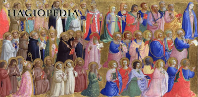

Su obra

La obra de Alfredo Parte Sáiz estuvo relacionada con la educación y la evangelización. Como miembro de las Escuelas Pías, participó de una misión centrada en formar a los jóvenes tanto en conocimientos como en valores.
Su labor religiosa buscaba transmitir la fe cristiana, acompañar a las personas y contribuir a la formación integral de los alumnos.
La misión escolapia
- Promover la educación de los jóvenes.
- Transmitir valores cristianos.
- Servir a la comunidad desde su vocación religiosa.